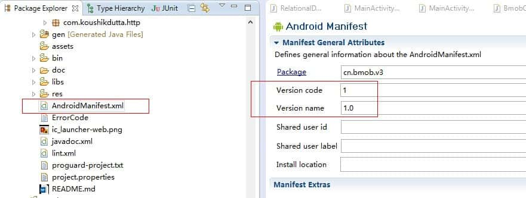

快速入门¶
添加资源文件¶
下载SDK提供的res文件夹拷入工程目录下，和工程本身res目录合并。
res文件夹下载地址：http://www.bmob.cn/static/res.zip
这里需要注意的是：
- 请不要随便删除其中的文件。
- BmobSDK提供的资源文件都以bmob_开头。
- 如果是在AndroidStudio中用远程依赖的方式就可以跳过这个步骤，因为这些资源都在下载到本地的aar包中。
配置AndroidManifest.xml¶
1.打开AndroidManifest.xml，添加SDK需要的权限到
<uses-permission android:name="android.permission.WRITE_EXTERNAL_STORAGE"></uses-permission>
<uses-permission android:name="android.permission.ACCESS_NETWORK_STATE"></uses-permission>
<uses-permission android:name="android.permission.INTERNET"></uses-permission>
说明： - android.permission.WRITE_EXTERNAL_STORAGE 权限允许将下载的apk保存到sd卡中。 - android.permission.ACCESS_NETWORK_STATE 权限允许检查网络状态，从而根据不同网络环境决定何种下载策略,务必添加该权限。
2.添加渠道到
<meta-data android:value="Channel ID" android:name="BMOB_CHANNEL"/>
说明：BMOB_CHANNEL用来标注应用推广渠道，不同渠道可以上传不同更新包，您可以使用20位以内的英文和数字为渠道定名，替换value中的Channel ID。如果不添加，将不区分渠道。(注意不要出现在manifest中标识了渠道但后端控制台没写渠道值，这样是无法自动更新的，因为没匹配上)
3.添加Activity到
<activity
android:name="cn.bmob.v3.update.UpdateDialogActivity"
android:theme="@android:style/Theme.Translucent.NoTitleBar" >
</activity>
初始化AppVersion表¶
一行代码轻松搞定AppVersion表（注意：请务必将该表在WEB端设置为只读模式）：
SDK提供了初始化自动创建AppVersion表的方法，不再需要开发者手动在web端创建。只需要在你使用自动更新功能的地方调用如下代码：
BmobUpdateAgent.initAppVersion();
注：
1、initAppVersion方法适合开发者调试自动更新功能时使用，一旦AppVersion表在后台创建成功，建议屏蔽或删除此方法，否则会生成多行记录。
2、如果调用了此方法后，在管理后台没有看见AppVersion表生成，建议到手机的应用管理界面清除该应用的数据，并再次调用该方法，也可到LogCat中查看与bmob相关错误日志。
3、如果2方法尝试多次之后仍然无效，请手动创建AppVersion表，表的各个字段名称请查看下表。
调用自动更新接口¶
最常见的自动更新模式是：当用户进入应用首页后，如果处于wifi环境则检测更新，如果有更新，弹出对话框提示有新版本，用户点选更新开始下载更新。实现的方法是，在应用程序入口Activity里的OnCreate()方法中调用如下代码：
public void onCreate(Bundle savedInstanceState) {
super.onCreate(savedInstanceState);
BmobUpdateAgent.update(this);
}
- 考虑到用户流量的限制，目前我们默认在WiFi接入情况下才进行自动提醒。如需要在任意网络环境下都进行更新自动提醒，则请在update调用之前添加以下代码：
BmobUpdateAgent.setUpdateOnlyWifi(false)
- 如果你发现调用update方法无反应，可使用下面
自定义功能中的监听检测更新的结果提到的方法来监听自动更新的结果,具体如下：
BmobUpdateAgent.setUpdateListener(new BmobUpdateListener() {
@Override
public void onUpdateReturned(int updateStatus, UpdateResponse updateInfo) {
// TODO Auto-generated method stub
//根据updateStatus来判断更新是否成功
}
})
强制更新¶
应用场景：如果应用需要屏蔽旧版本，强制用户必须更新升级到最新版才能继续使用。
SDK中为自动更新方式提供了强制更新功能，当开发者开启强制更新功能（即将后台的AppVersion表中的isforce字段置为true）时，客户端调用BmobUpdateAgent.update(context)方法后，更新对话框只保留“立即更新”按钮且不再支持回退操作。其效果图如下：

忽略版本更新¶
SDK中为自动更新方式提供了忽略版本更新功能，当用户勾选”忽略该版“选项时，再次调用BmobUpdateAgent.update(context)则不再出现版本更新对话框。
注：强制更新和忽略版本更新只支持自动更新方式。
上传APK文件或填写apk文件的url地址¶
初始化AppVersion表成功后，开发者在管理后台的数据浏览页中就可以看见AppVersion表了,该表的结构如下：
| 字段名称 | 字段类型 | 是否必填 | 字段说明 |
|---|---|---|---|
| update_log | String | 是 | 更新日志 |
| version | String | 是 | 版本名称 |
| version_i | Number | 是 | 版本号 |
| platform | String | 是 | 平台，注意："Android"为安卓平台标示，"ios"为ios平台标示 |
| target_size | String | 是 | Apk文件大小 |
| isforce | Boolean | 否 | 是否强制更新 |
| path | File | 是/否 | Apk文件 |
| android_url | String | 是/否 | apk市场地址（path字段和本字段必填其中一个） |
| channel | String | 否 | 渠道标示 |
| ios_url | String | 否 | iOS app store地址（如果是ios记录一定要填写） |
创建好这个表结构之后就可以新增一些记录，把应用的信息和下载地址（或者上传文件）填写上去，如下图所示：

注：
1、target_size为必填项，是为了解决当apk下载过程中切换网络导致的解析包出现错误问题，请手动填入apk文件的字节大小。可通过鼠标右键apk文件-->属性-->大小（不是占用空间）获取到的target_size值（不需要单位）：

如上例，只需要在target_size字段中填写5032788就行。
2、新添加的数据记录的version_i（对应应用中的version code，如下图）的数值要大于手机中安装的应用的version number，否则无法生效。另外，platform需要根据实际情况填写平台信息。

3、新版SDKV3.3.2调用initAppVersion方法后，你会看到AppVersion表的path字段有一个test.apk的文件，其实这个文件是个空的文件，不必过于纠结，将test.apk删除后再上传自己的apk文件即可。
4、新版SDKV3.3.4允许下载已上传到应用市场上的apk文件，因此，path和android_url两者填任意一个即可，若都填写，默认优先下载path字段下的apk文件。
5、新版SDKV3.3.4新增对update_log字段内容进行文字排版的功能，只需要在分段处加上分隔符；即可（UI效果如下图）
具体格式参考如下范例：1、修复第三方登陆成功后无法获取本地用户信息的问题；2、修复设置缓存策略后无法获取本地缓存信息的问题；3、修复调用云端逻辑（callEndpoint）方法的成功回调的返回值中含有“results”的问题；4、新版文件管理中对本地缩略图的处理方法新增压缩质量的参数。

6、如果在web后台上传apk文件，然后在使用了v3.4.6之前版本的sdk的应用上调用自动更新功能出现 解析包出错 的问题，解决方法如下：
请不要上传apk文件到path字段，改为填写apk文件的url地址到android_url字段。
具体原因请查看 常见问题。
集成检测¶
SDK中默认开启了集成检测功能，在调用任意的更新接口后，我们将替您自动检查上述集成过程中2、3两个步骤是否被正确完成。 如果正确完成不会出现任何提示，否则会以如下的toast提示您。
你可以通过调用BmobUpdateAgent.setUpdateCheckConfig(false)来禁用此功能。
toast的含义如下：
"Please copy all resources (res/) from SDK to your project!"：请检查是不是把res文件夹下所有的资源文件都放到了工程中。
"Please add Permission in AndroidManifest!"：请检查上述步骤中的相关权限是否正确添加。
"Please add Activity in AndroidManifest!"：请检查上述步骤中的Activity是否正确添加。
其他更新方式¶
除了在快速入门中提到的自动更新之外，Bmob自动更新SDK还支持另外两种场景：手动更新、静默更新。 下面将详细介绍这两种场景的接口及默认行为。
手动更新¶
许多应用的设置界面中都会有检查更新等类似功能，需要用户主动触发而检测更新。它的默认行为基本和自动更新基本一致。它和自动更新的主要区别是：在这种手动更新的情况下，无论网络状况是否Wifi，无论用户是否忽略过该版本的更新，都可以像下面的示例一样在按钮的回调中发起更新检查，代替update(Context context)：
public void onClick(View v) {
BmobUpdateAgent.forceUpdate(mContext);
}
静默下载更新¶
当用户进入应用首页后如果处于wifi环境检测更新，如果有更新，后台下载新版本，如果下载成功，则进行通知栏展示，用户点击通知栏开始安装。静默下载过程中如果wifi断开，则会停止下载。实现的方法是：在应用程序入口Activity里的OnCreate()方法中调用如下代码：
public void onCreate(Bundle savedInstanceState) {
super.onCreate(savedInstanceState);
BmobUpdateAgent.silentUpdate(this);
}
自定义功能¶
恢复默认设置¶
BmobUpdateAgent.setDefault();
设置更新的网络条件¶
BmobUpdateAgent.setUpdateOnlyWifi（boolean updateOnlyWifi）
注：updateOnlyWifi:true表示只在wifi环境下检测更新，false表示所有环境下均可检测更新
监听检测更新的结果¶
如果开发者想自己处理检测更新的结果，可以按如下步骤，实现更新监听接口，自主处理更新事件：
BmobUpdateAgent.setUpdateListener(new BmobUpdateListener() {
@Override
public void onUpdateReturned(int updateStatus, UpdateResponse updateInfo) {
// TODO Auto-generated method stub
if (updateStatus == UpdateStatus.Yes) {//版本有更新
}else if(updateStatus == UpdateStatus.No){
Toast.makeText(ActAutoUpdate.this, "版本无更新", Toast.LENGTH_SHORT).show();
}else if(updateStatus==UpdateStatus.EmptyField){//此提示只是提醒开发者关注那些必填项，测试成功后，无需对用户提示
Toast.makeText(ActAutoUpdate.this, "请检查你AppVersion表的必填项，1、target_size（文件大小）是否填写；2、path或者android_url两者必填其中一项。", Toast.LENGTH_SHORT).show();
}else if(updateStatus==UpdateStatus.IGNORED){
Toast.makeText(ActAutoUpdate.this, "该版本已被忽略更新", Toast.LENGTH_SHORT).show();
}else if(updateStatus==UpdateStatus.ErrorSizeFormat){
Toast.makeText(ActAutoUpdate.this, "请检查target_size填写的格式，请使用file.length()方法获取apk大小。", Toast.LENGTH_SHORT).show();
}else if(updateStatus==UpdateStatus.TimeOut){
Toast.makeText(ActAutoUpdate.this, "查询出错或查询超时", Toast.LENGTH_SHORT).show();
}
}
});
//发起自动更新
BmobUpdateAgent.update(this);
监听对话框按键操作¶
有时候开发者需要知道用户点击了哪个按钮，开发者可设置监听对话框的按钮点击事件。
//设置对对话框按钮的点击事件的监听
BmobUpdateAgent.setDialogListener(new BmobDialogButtonListener() {
@Override
public void onClick(int status) {
// TODO Auto-generated method stub
switch (status) {
case UpdateStatus.Update:
Toast.makeText(ActAutoUpdate.this, "点击了立即更新按钮" , Toast.LENGTH_SHORT).show();
break;
case UpdateStatus.NotNow:
Toast.makeText(ActAutoUpdate.this, "点击了以后再说按钮" , Toast.LENGTH_SHORT).show();
break;
case UpdateStatus.Close://只有在强制更新状态下才会在更新对话框的右上方出现close按钮,如果用户不点击”立即更新“按钮，这时候开发者可做些操作，比如直接退出应用等
Toast.makeText(ActAutoUpdate.this, "点击了对话框关闭按钮" , Toast.LENGTH_SHORT).show();
break;
}
}
});
注：UpdateStatus列表
UpdateStatus.TimeOut =-1：查询出错或超时
UpdateStatus.Yes = 0：有更新
UpdateStatus.No = 1：没有更新
UpdateStatus.IGNORED = 3：该版本已被忽略更新
UpdateStatus.EmptyField = 2：字段值为空，请检查以下内容：
1)、是否已填写target_size目标apk大小（以字节为单位）；
2)、path或者android_url两者是否必填其中一项（若两者都填写，则默认下载path字段下的apk文件）
UpdateStatus.ErrorSizeFormat = 4：请检查target_size填写的格式，请使用file.length()方法获取apk大小
UpdateStatus.Update =6： 代表点击的是“立即更新”
UpdateStatus.NotNow =7： 代表点击的是“以后再说”
UpdateStatus.Close =8： 代表关闭对话框-->只有在强制更新状态下才会在更新对话框的右上方出现close按钮,如果用户不点击”立即更新“按钮，这时候开发者可做些操作，比如直接退出应用等
常见问题¶
一、上传新的APK文件之后，为什么使用 v3.4.6以前版本的SDK开发的旧应用 的自动更新功能出现解析包出错问题？
1、表现：
只下载58字节后就弹出安装界面，点击安装出现`解析包出错`的错误。
2、原因：
自4月13日上线CDN文件服务以来，通过Web后台上传的apk文件都会自动上传到CDN服务提供商那里，而`v3.4.6以前版本的SDK`的自动更新功能中得到`用于下载的url地址会将Bmob原有的文件域名拼接到BmobFile的url前面`。
因此，最终拼接成的用于下载的地址是类似这样的：`http://file.bmob.cn/http://bmob-cdn-82.b0.upaiyun.com/2016/04/20/xxx.apk`，由此导致 `解析包出错`。
3、解决方法：
不要上传apk文件到`AppVersion`表的`path`字段，改为填写url地址到`AppVersion`表的`android_url`字段，以此来恢复旧应用的自动更新功能。
其中，android_url可以是以下两种之一：
1）、`各大应用市场的应用下载地址`
2）、`上传新的apk文件到bmob的其他表的文件字段中，然后通过getFileUrl(context)获取到的url地址`
注：如果是新发布的应用(使用BmobV3.4.6后的版本开发的应用)，则仍然可以上传apk文件到AppVersion表的path字段中。
二、 为什么调用BmobUpdateAgent.update(this)方法后没有弹出更新对话框？
请仔细检查以下几方面：
1）、如果是通过`手动方法`在后台创建的AppVersion表的话，则仔细对照文档检查各个字段的名称是否正确填写，注意大小写;
2）、`AndroidManifest.xml`中的的`android:versionCode`的值是否比后台的`AppVersion`表中填写的`version_i`的值`小`;
3）、`target_size`的值是否正确填写，填写的是apk的字节大小，没有单位，例如：很多开发者填写的是'x.xxM',这个格式是错误的;
4)、`AndroidManifest.xml`中的`BMOB_CHANNEL`的值是否和后台的`AppVersion`表中填写的`channel`的值`相等`。
<!-- 设置应用渠道，如果应用不需要区分渠道，则建议删除此行 -->
<meta-data android:name="BMOB_CHANNEL" android:value="bmob"/>
案例源码¶
这里我们提供了一个使用BmobSDK自动更新功能的实例程序供大家参考。下载地址如下：https://github.com/bmob/bmob-android-demo-autoupdate